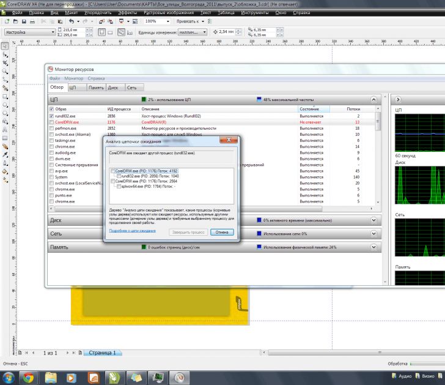

Нехватка оперативной памяти для CorelDraw X4/X5 в Windows7 (64 бит), 8 Гб.
Вадим / 13.07.2011, 20:46/00:41
Форум:
Версия программы:
14.0.0.701 (sp2)
Уважаемые коллеги, у меня проблема - обновленные CorelDraw X4 и X5 зависают при попытке открытия нескольких больших файлов. Корел не может использовать более 1,5 Гб оперативной памяти в Windows7, хотя свободной памяти достаточно. В настройках Корела Х4 установил потреблять 70% оперативной памяти - это более 5 Гб - изменений не произошло. Когда объем потребляемой памяти в диспетчере задач достигает около 1,5 Гб, Корел X5 - выдает ошибку "Out of memory", Корел X4 ничего не выдает - просто виснет. До этого работал с Корел Х3 на Windows XP, 4 Гб - такой проблемы не замечал... Поделитесь опытом, если кто работает с большими файлами или разбирается в Windows7.
А больших это каких, 100Mb или 1Gb? :)
Выделением ресурсов занимается система а не приложение.
На самом деле эта ошибка связана с недостаточностью ресурсов видео памяти и процессора.
Пару лет назад сталкивался с этим на иных версиях корела.
themadman, не может быть!
Дайте больше пространства на дисках для файла подкачки.
32-х битное приложение не будет использовать больше 3-3,5 Гб оперативной памяти.
Sancho, ближе к 1Gb. Пробовал разные файлы, часто приходится работать с растровой подложки, на которой лежат несколько десятков тысяч векторных объектов - картография. Но иногда виснет и с более легкими файлами.
themadman,процессор: intel core i5 2500 CPU 3.30 GHz.
Видеокарта: ASUS EAH5770. Вроде все хорошее, современное.. блок питания хороший..
А у кого-нибудь, вообще, Корел пожирал больше 1,4 Gb оперативки?:)
DynamiteBoy, спасибо, но это я уже сделал - файл подкачки 12Gb. А разве Х5 не предназначен для 64-битных систем? Я буду очень рад если Корел будет использовать хотябы 3Gb. Или хотябы просто перестанет виснуть!
Вадим, Корела пока что 32-битное приложение
Такая картина:

Вадим, винда сборка что ли какая то?
Sancho, честно говоря, не разбираюсь... Windows 7 Pro CIS and GE лицензионная, шла вместе с компом.) Это всё что я о ней знаю)
Страницы